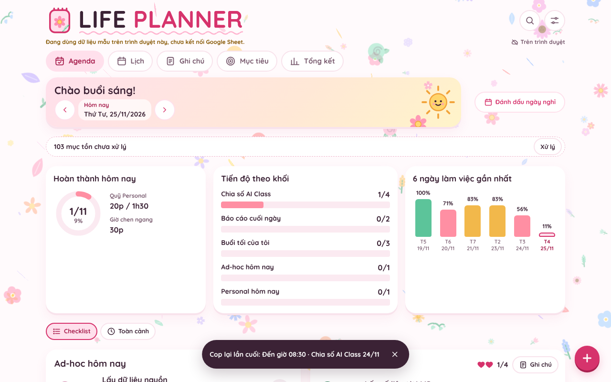
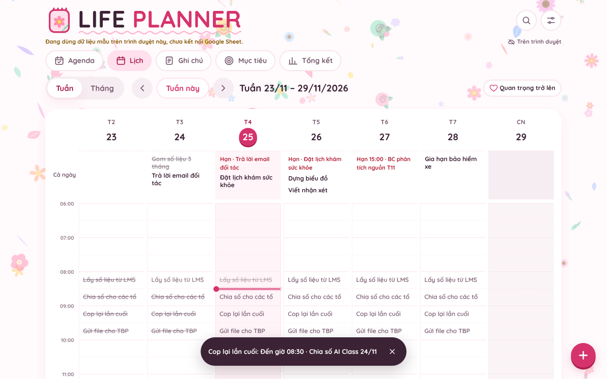
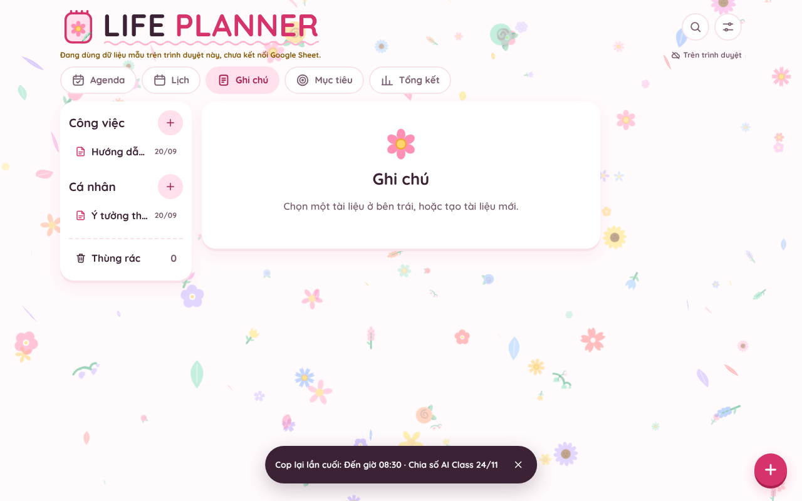
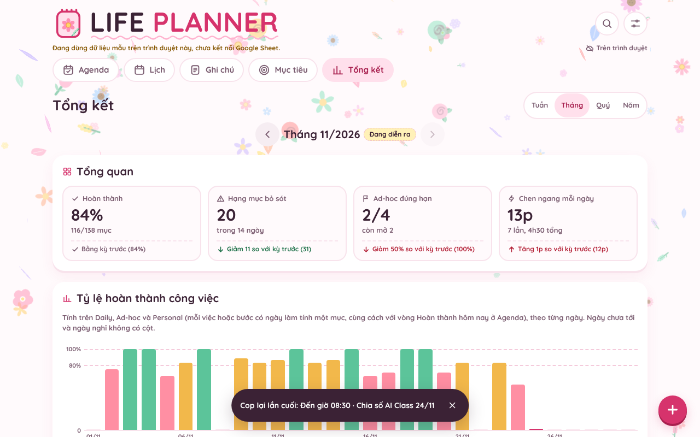

Sổ kế hoạch của riêng bạn
Không quên việc nào nữa.
Daily, Ad-hoc, Personal và ghi chú ở cùng một chỗ, lưu trong Google Sheet của bạn.

Năm tab, mỗi tab một việc
Agenda
Hôm nay cần làm gì, theo giờ. Tick Daily, xem Ad-hoc và Personal, thấy ngay mục trễ.
Lịch
Tuần và tháng. Quỹ giờ mỗi ngày, hạn chót, ngày nghỉ, ngày nào còn sót.
Ghi chú
Tài liệu dài có mục lục, gắn vào Daily hay Ad-hoc để mở đúng lúc cần.
Mục tiêu
Mục tiêu theo kỳ và thói quen hằng ngày, có chuỗi ngày liên tiếp.
Tổng kết
Biểu đồ hoàn thành, mục hay bị sót, giờ chen ngang theo tuần và tháng.



Một ngày dùng thế nào
- 08:00
Sáng: tick Daily
Các khối lặp lại theo lịch hiện sẵn, có giờ. Mục đến giờ được tô hồng, mục trễ báo số phút.
- 10:30
Trong ngày: bấm "+"
Thêm Ad-hoc khi được giao, thêm Personal, ghi chú nhanh hoặc ghi lại chen ngang.
- 17:30
Cuối ngày: Soát
Xem lại mục chưa xong. Chọn mang sang mai, bỏ qua, hoặc đánh dấu đã làm.
- Hôm sau
Việc tồn tự sang
Mục mang sang hiện trong khối của nó, có nhãn "Tồn từ" để không lạc.
Dữ liệu là của bạn
Google Sheet riêng
Mọi dòng nằm trong Sheet "Life Planner V2 - dữ liệu" của bạn. Mở Sheet là đọc được.
Chỉ cần trình duyệt
Không cài phần mềm. Dùng được trên máy công ty và điện thoại.
Chế độ sáng và tối
Theo máy hoặc tự chọn trong Cài đặt. Hoa rơi bật, tắt tùy ý.
Bắt đầu ngày hôm nay
Mở Agenda, xem việc đầu tiên.
Mở Life Planner